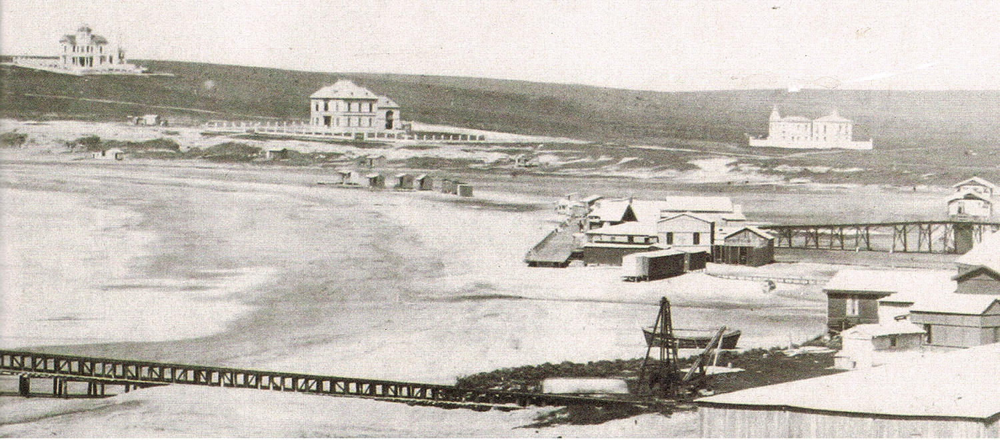
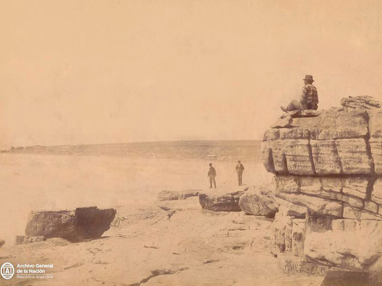
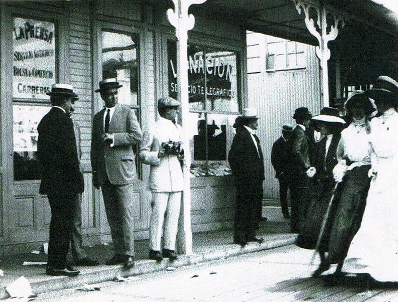
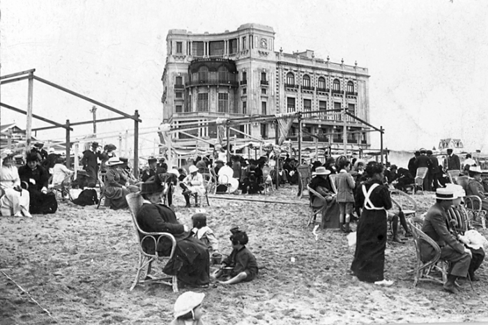
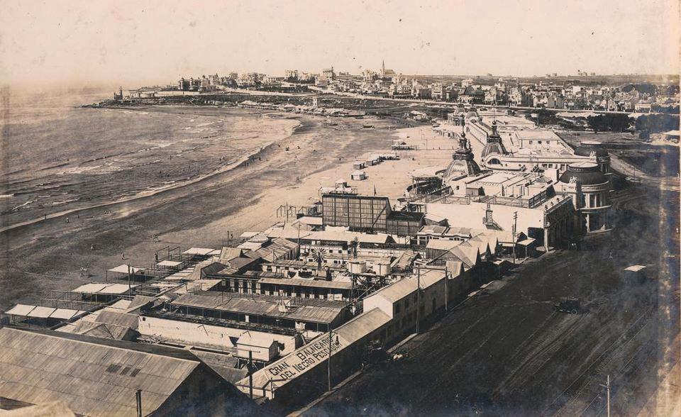
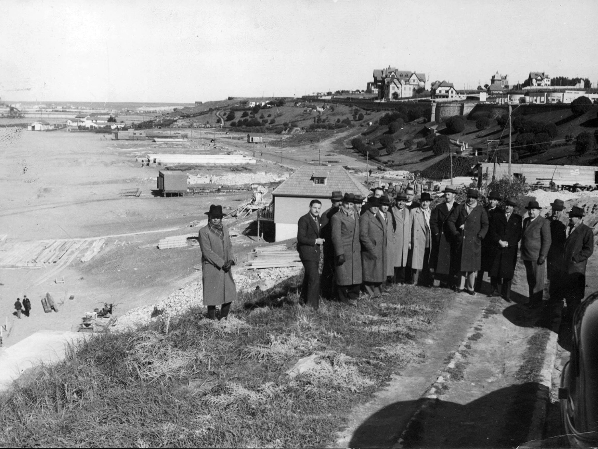
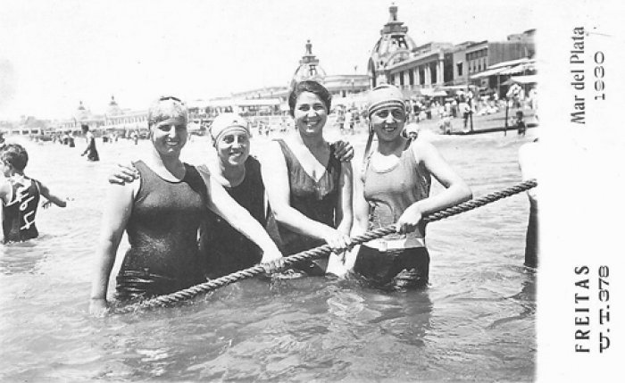
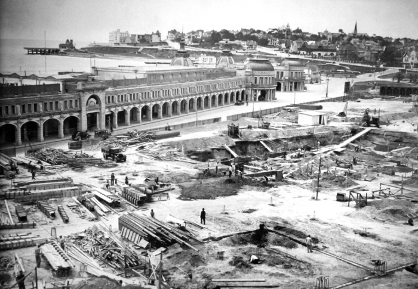
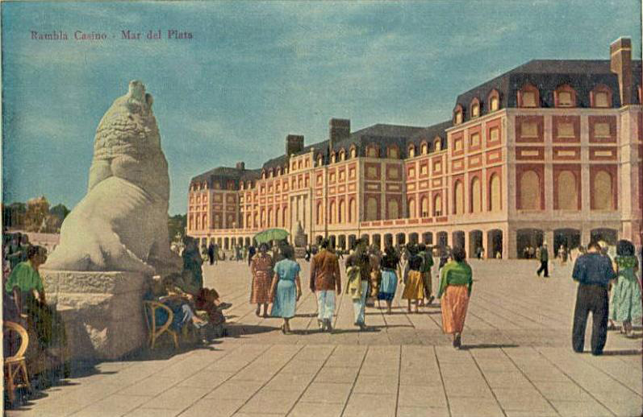

Historia de la ciudad de Mar del Plata
El primer español que tuvo contacto con las costas marplatenses fue Fernando de Magallanes, quien en febrero de 1519 bautizó Punta de Arena Gordas a la actual Punta Mogotes. Luego Juan de Garay realizó la primera entrada por tierra entre 1581 y 1582; pero ninguna de estas dos expediciones dejó una población permanente. Quienes realizaron el primer intento, fueron los padres jesuitas Matías Strobel; Tomás Falkner y José Cardiel, quienes en 1747 establecen una misión jesuítica a orillas de la Laguna "Las Cabrillas" -hoy conocida como Laguna de los Padres-,este establecimiento alcanzó tener 1200 indígenas viviendo en los alrededores y recibió el nombre de Nuestra Señora del Pilar. Esta misión fue breve, ya que dada la hostilidad de las tribus que no estaban incorporadas a la vida de la misión y ante la pérdida de influencia de la Orden, los jesuitas abandonaron las instalaciones el 1° de septiembre de 1751.
El saladero
En 1857 un consorcio brasileño-portugués - cuyo representante era Coelho de Meyrelles - adquiere tierras en la desembocadura del arroyo Las Chacras, actual playa de Punta Iglesias, e instala un saladero que provocará un lento y progresivo cambio en la fisonomía de la región. Comenzó a ser llamado “Puerto de la Laguna de los Padres” y poco a poco en los alrededores se empezó a concentrar un pequeño núcleo de pobladores.Con la progresiva decadencia de la actividad saladeril, el negocio no pudo continuar y a la muerte de Coelho de Meyrelles una parte de sus tierras fue adquirida por un actor fundamental en la constitución de la ciudad de Mar del Plata: Patricio Peralta Ramos.
El pueblo de Mar del Plata
Cuando Patricio Peralta Ramos se hace cargo de las tierras de Coelho de Meyrelles, inicia el 14 de noviembre de 1873 las gestiones ante el gobierno de la provincia para que se reconozca la existencia de el pueblo "Puerto de la Laguna de los Padres" en terrenos de su propiedad. Esta solicitud tuvo una respuesta favorable y el 10 de febrero de 1874 el gobernador de la provincia de Buenos Aires, Mariano Acosta, firmó el decreto donde reconoce al nuevo pueblo dentro del Partido de Balcarce, el cual recibe a pedido de Peralta Ramos el nombre de Mar del Plata. El 15 de octubre de 1879, el gobierno provincial autoriza la creación del Partido de Gral. Pueyrredón -producto de una división del Partido de Balcarce-. En 1877 llega a Mar del Plata Pedro Luro, quien se hizo cargo del saladero, la grasería, instaló un molino y construyó un nuevo muelle, dándole un nuevo impulso a la agricultura de la región.
La villa turística
El 26 de septiembre de 1886 llega al pueblo de Mar del Plata el ferrocarril, conectando así la localidad en pleno desarrollo con la capital del país y pudiendo transformarse lentamente en un centro urbano moderno. El tren ayudó a movilizar a una población que elegía esta localidad para trabajar y habitar todo el año.
Desde fines del siglo pasado y hasta los años ‘30, Mar del Plata fue convirtiéndose en un balneario de élite. Las familias adineradas tomaban sus vacaciones en la ciudad desde el mes de noviembre y permanecían hasta Semana Santa, allí convivían los que residían permanentemente en la ciudad y los residentes de carácter temporario. Los veraneantes llegaban desde la ciudad de Buenos Aires por el Ferrocarril del Sud.
Mar del Plata comenzó siendo una " villa balnearia" por iniciativa de la clase alta porteña, que se vio reflejado en la inauguración del hotel Bristol, en 1880, y a cuya inauguración asistió un centenar de personalidades, entre ellas el entonces Ministro de Guerra y Marina, Carlos Pellegrini.
Rápidamente fueron apareciendo los hoteles sobre la costa, como así también los chalets y mansiones de la élite veraneante, que fueron poblando la loma recostada sobre el mar entre la Playa Bristol y el Torreón del Monje, que todavía hoy son admiradas por los visitantes; Algunas de estas residencias sobreviven en la actualidad, como el chalet de Ana Elía Ortiz Basualdo, ubicado en Av. Colón y Alvear (actualmente museo de arte Juan Carlos Castagnino); la casa de Victoria Ocampo; o la quinta de Emilio Mitre, actualmente Archivo Histórico Municipal.
Se crearon paseos públicos como la antigua Plaza Colón, diseñada por Carlos Thays y el Paseo General Paz. En enero de 1913 cuando se le dio forma a la "afrancesada" Rambla Bristol, era cuando se decía que Mar de Plata era "la Biarritz Argentina".
La segunda etapa de crecimiento de Mar del Plata se dio en los años 30, configurando una nueva postal urbana: Fue cuando desde el gobierno de la provincia de Buenos Aires, se llevó a cabo un plan de obras públicas: en 1938 se pavimentó la ruta 2, y en 1941 se construyó el balneario en Playa Grande tirando abajo la Rambla Bristol y levantando allí dos edificios gemelos, el Casino y el Hotel Provincial.
A medida que la afluencia de veraneantes era mayor, algunos miembros de la élite comenzaron el éxodo hacia el sur de la ciudad, instalándose en Playa Chica y Playa Grande, más allá de Cabo Corrientes hasta el Golf. Pero no todos los veraneantes de esos años eran de clase alta, la costa de La Perla era la elegida por clases sociales más bajas o con una vida social menos intensa.
En la década de 1950 y 1960 “La feliz” fue creciendo, y pasó de ser un destino veraniego de la elite porteña a ser la capital del turismo popular, cuando comienzan aparecer muchos turistas de los sectores sociales de clases medias de reciente formación, quienes querían tener también un lugar en Mar del Plata. Poco a poco fueron apareciendo los rascacielos y también los hoteles sindicales. Mar del Plata fue convirtiéndose de a poco en un reflejo de las transformaciones sociales del país.
Con más de mil hoteles, noventa balnearios, cientos de departamentos en alquiler y millones de visitantes por temporada, la ciudad llegó a su apogeo en la década de 1960 y continúa siendo el destino favorito de los turistas quienes eligen esta ciudad a la hora de veranear.
